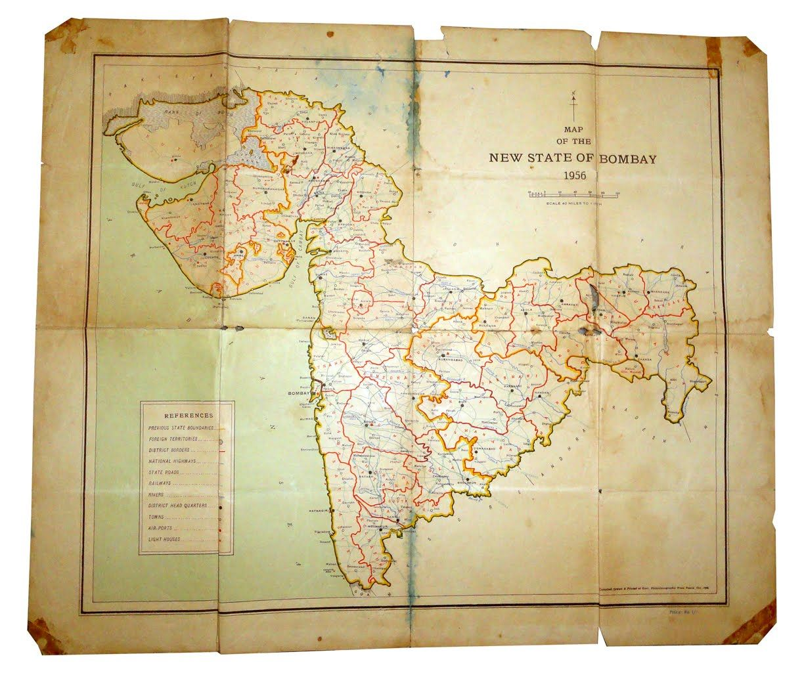

HISTORY

Chalcolithic sites belonging to the Jorwe culture have been discovered throughout the
state. The largest settlement discovered of the culture is at Daimabad, a Late Harappan site,
which had a mud fortification during this period, as well as an elliptical temple with fire pits. Some
settlements show evidence of planning in the layout of rectangular houses and streets or lanes.
In the Late Harappan period there was a large migration of people from Gujarat to northern Maharashtra.
Linguists and archeologists believe it is likely Maharashtra was inhabited by Dravidian speakers during
the middle Rigvedic period, which be determined from Dravidian place names in Maharashtra.
Maharashtra region later became part of the Maurya Empire with edicts of emperor Ashoka found in the
region. Buddhism flourished during this period in the region. Trade, including international trade with
Greeks and later with the Roman empire, also flourished with traders being the main patrons of Buddhist
monasteries. Indo-Scythians Western Satraps ruled part of the region during the early part
of the first millennium.
Maharashtra was historically the name of a region which consisted of Aparanta, Vidarbha, Mulak, Assaka
(Asmaka) and Kuntala. Tribal communities of Bhil people inhabited this area, also known as Dandakaranya,
in ancient times. There was also an ancient race called "Rattha" (रठ्ठ in Marathi), who referred to
themselves as "Maharattha" (Maha is Great). The name Maharashtra first appeared in the 7th century in
the account of a contemporary Chinese traveler, Huan Tsang.
Shivaji was the founder of the modern Maratha
empire; his policies were instrumental in forging a distinct identity for the Marathi people[citation
needed]. He was born in the Bhonsle clan, sometime in the period 1627 to 1630. Shivaji carved out an
enclave from the declining Adilshahi sultanate of Bijapur that formed the genesis of the Maratha Empire.
In 1674, he crowned himself as the Chhatrapati (Monarch) of his realm at Raigad Fort. However, to achieve
this he not only had to fight the Mughals and the Adilshahi but also many Maratha Watandars.
These Watandars considered their watan a source of economic power and pride and were reluctant to part with
it. The Watandars even initially opposed the emergence of Shivaji, because their economic interests
were affected. Shivaji was an able administrator and established a government that included such
modern concepts as a cabinet (ashtapradhana mandala), foreign affairs (dabir) and internal
intelligence. He established an effective civil and military administration, built a powerful navy
and erected new forts (e.g. Sindhudurg Fort) and strengthened old ones (e.g. Vijaydurg Fort) on the
west coast of Maharashtra. He died around April 3, 1680, of dysentery.